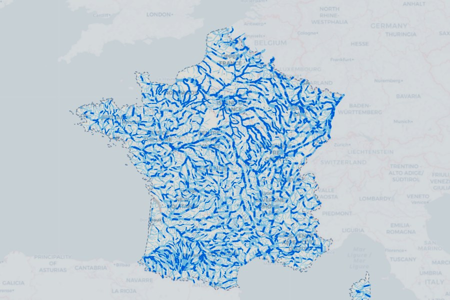
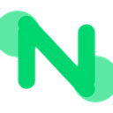
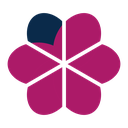

Open to Opportunities
Analytics Engineer · Data, AI & Agents
Turning raw datainto intelligence.
I'm Deepak Prajapati — I build BigQuery analytics stacks and GA4/GTM tracking systems, train and fine-tune models, and ship AI agents and evaluation-driven LLM applications that turn complex datasets into decisions.
Scroll
Selected Works
Featured
Featured
Projects

Fraud Detection
Fraud Detection Model
Credit-card fraud detection in TensorFlow/scikit-learn supervised and unsupervised models spanning deep neural networks, Isolation Forest, K-Means, and One-Class SVM, compared via precision, recall, and confusion-matrix analysis on 284K imbalanced transactions.

ML RAG PyTorch
Stock Market Prediction
Forecasting price trends using RAG, Matplotlib & PyTorch. Surfacing actionable, decision-ready insights for investors and analysts.

AI Automation
HR Resume Sorting Workflow
AI-powered CV screening pipeline with automated intake, parsing, and JD scoring. Reduced screening time by 70%+ and improved candidate matching accuracy.

“I design clean workflows, build scalable data systems, and turn complex datasets into business-ready intelligence.”
Analytics engineer with an MSc in Big Data & AI and 4+ years spanning data quality, KPI governance, and analytics — including leading QC analyst teams at Numerator at 95%+ SLA.
At TravelJuice I own the analytics stack end-to-end: BigQuery mart models across the full funnel (search, conversion, checkout, loyalty, product performance), rebuilt GA4/GTM tracking with custom dimensions and server-side tagging, an 82% Meta Ads vs GA4 attribution gap closed via Consent Mode V2, and 70% off BigQuery costs through partitioning and query optimization — all surfaced in Looker Studio and Apache Superset dashboards that marketing and product run on daily. I also trained an in-house ML model, shipped a one-click Brevo newsletter generator that removed manual email build time, and partner directly with small and regional French airports on the data behind their growth.
On the AI side I build evaluation-driven LLM applications: an agentic RAG assistant tuned with RAGAS (faithfulness 0.60 → 0.92) and a custom LLM eval harness. Most recently France River Flow — live discharge for 3,272 French rivers and 121,530 km of network, pulled from the open Hub’Eau API across all 96 departments and animated downstream on the map. Certified in Microsoft PL-300 and Six Sigma; fluent in English and Hindi, working proficiency in French.
4+Years Exp
5Featured Projects
82%Attribution Gap Closed
70%Cost Optimization
Chronicles
Career
Career
Timeline
From market research to data quality and analytics engineering — a trajectory shaped by curiosity, rigor, and a passion for data.
2018–2020
ARSS · India
Market Researcher — Cleaned and segmented multi-source data with advanced Excel (lookups, pivots, conditional logic), lifting reporting accuracy and cutting turnaround by 25%. Packaged findings into summaries that shaped product and go-to-market decisions.

N2021–2023
Numerator · India
Data Associate — Ran real-time productivity tracking for 80+ associates and built backlog playbooks that cut peak clearance time by 40%. Onboarded new retailers through 15+ trainings and reused validated data to remove repetitive work.
N
2023–2024
Numerator · India
QC Data Analyst — Built 4+ executive dashboards and a leaner reporting pipeline that cut turnaround time by 30%. Led 10–12 analysts through 800+ QC blocks/week at 95%+ SLA, standardised QC methodology, and ran 10+ cross-trainings, lifting audit scores by 25% and cutting process deviation by 20%.

TJ2026–Present
TravelJuice · France
Data Analyst Intern — Built the analytics layer for funnel rebuild in BigQuery (search, conversion, checkout, product performance, customer lifecycle). Rebuilt GA4/GTM tracking, closed an 82% Meta Ads vs GA4 conversion gap via Consent Mode V2 with server-side tagging. Optimized BigQuery costs by 70% through query optimization and data partitioning. Built an internal newsletter generation tool that assembles a ready-to-send campaign in one click — two templates, service blocks for flights, hotels, car rental and parking, and direct import into Brevo.

Education
Montpellier Business School
MSc — Big Data & Artificial Intelligence
2025–2026 · France
IIT Ropar
Major — Artificial Intelligence
2024–2025 · India
Maharaja Sayajirao University
Bachelor of Commerce
2017–2020 · India
Certifications
Toolbox
Technical Arsenal
Tools spanning data engineering, machine learning, LLMs, business intelligence, and ad-tech — battle-tested in production.
PythonSQLR
PyTorchFine-Tuning
Agentic AIRAGAS
Apache SupersetETL Pipelines
Google AdSenseGoogle Ad Manager
Consent Mode V2Server-Side Tagging
StreamlitGeoPandas
FoliumPlotly
REST APIsPytest
Model TrainingLLM Evaluation
JiraHTML & CSS
Py
Python & SQL
Data modelling, pipelines, geospatial & analytics engineering
BQ
BigQuery
Mart models, partitioning & 70% cost optimization
GA
GA4 & GTM
Tracking architecture, Consent Mode V2, server-side tagging
AI
LLMs, Agents & Fine-Tuning
Model training, fine-tuning & agentic pipelines — RAGAS 0.60 → 0.92
BI
Looker & Apache Superset
Executive dashboards & KPI reporting teams run on
N8N
N8N, Git & Jira
Workflow automation, version control & sprint delivery
Connect
Get In
Get In
Touch
I'm always interested in new opportunities and collaborations. Let's discuss how we can work together on your next data science project from analytics pipelines to production AI.
Phone+33 745-330-940
LocationNice, France
LanguagesEnglish · Hindi · French

Send a Message
Fill this in and hit send — it opens your mail app with everything pre-filled.
Opens your email client — no data is stored on this page.
“Turning raw data into intelligence, one model at a time.”
Deepak Prajapati · Portfolio 2026